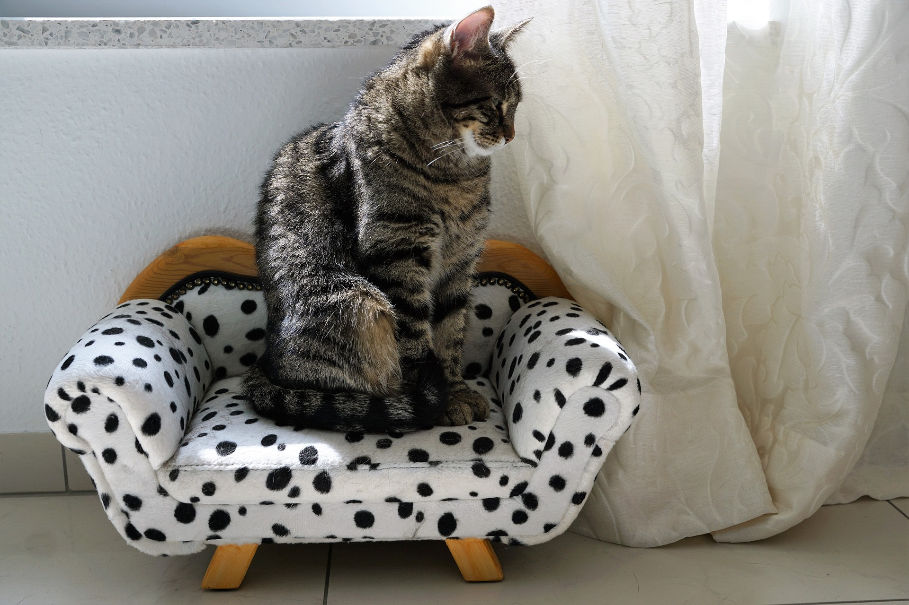
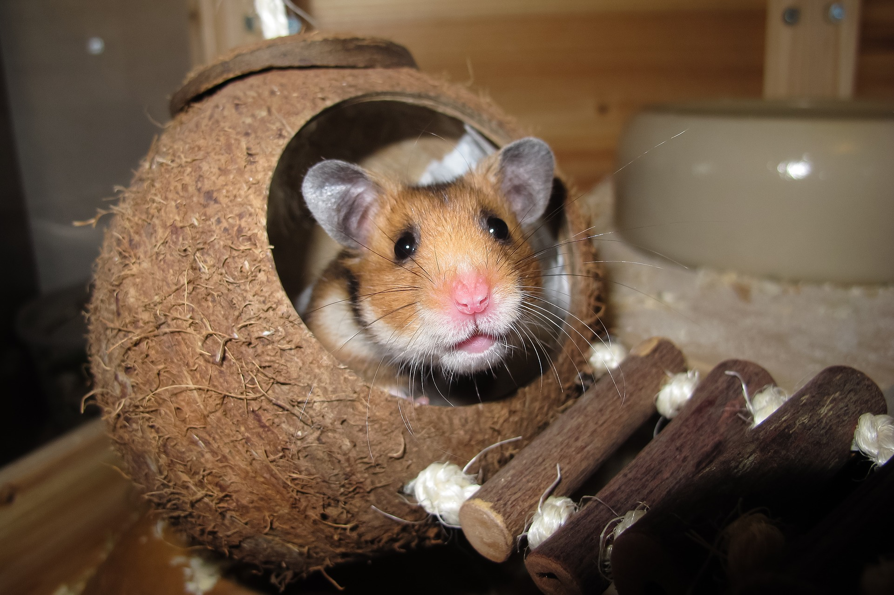

BLOG INFORMATIVO
En esta sección encontrará artículos, noticias, videos y notas de interés para el cuidado de sus mascotas.
MinSalud insta a la tenencia responsable de mascotas

El Ministerio de Salud y Protección Social reiteró una vez más la responsabilidad que tiene la población sobre la tenencia responsable de mascotas (gatos y perros) y la necesidad de mantener a día su vacunación antirrábica para evitar casos mortales de la rabia.
Ver mas
¿Está mal tratar a los perros como un hijo?, esto dicen expertos
La humanización de las mascotas, especialmente de perros y gatos, es una práctica común y que, según expertos, va en aumento por la tendencia de preferir un hogar con animales, como en el caso de España, donde hay más mascotas que niños registrados.
Ver más
Tipos de hámster y sus diferencias
Los hámster están ganando popularidad entre los roedores mantenidos como mascotas. Son originarios de regiones de Rusia, China y Mongolia, donde fueron descubiertos recién en 1917.
Ver más
MinSalud insta a la tenencia responsable de mascotas
El Ministerio de Salud y Protección Social reiteró una vez más la responsabilidad que tiene la población sobre la tenencia responsable de mascotas (gatos y perros) y la necesidad de mantener a día su vacunación antirrábica para evitar casos mortales de la rabia.
¿Está mal tratar a los perros como un hijo?, esto dicen expertos
PLa humanización de las mascotas, especialmente de perros y gatos, es una práctica común y que, según expertos, va en aumento por la tendencia de preferir un hogar con animales, como en el caso de España, donde hay más mascotas que niños registrados.
Tipos de hámster y sus diferencias
Los hámster están ganando popularidad entre los roedores mantenidos como mascotas. Son originarios de regiones de Rusia, China y Mongolia, donde fueron descubiertos recién en 1917.